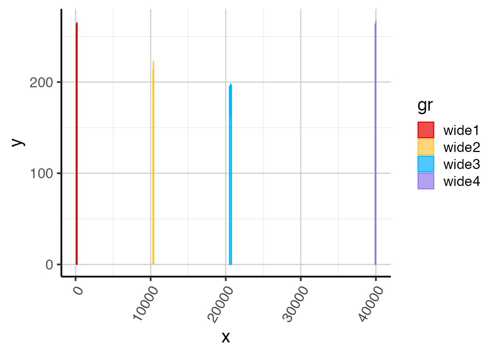
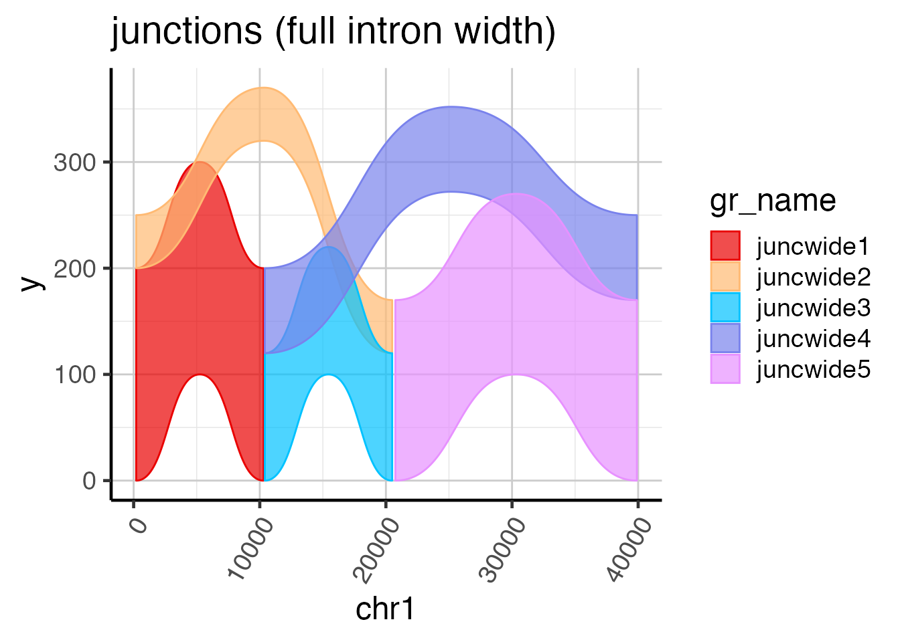

Create a Sashimi Plot
James M. Ward
2019-03-28
Source:vignettes/create-a-sashimi-plot.Rmd
create-a-sashimi-plot.RmdGene-exon structure
There are several sources of gene-exon structures:
-
GTF or GFF file, for example Gencode GTF (https://www.gencodegenes.com).
- If a GTF file is used in upstream processing, it is recommended to use that same GTF or GFF file to create a
GenomicFeatures::TxDbobject withGenomicFeatures::makeTxDbFromGFF(). - The function
splicejam::makeTx2geneFromGtf()creates adata.framewith cross-reference data for"transcript_id"and"gene_name". This step makes GTF a more reliable workflow than theTxDbworkflow, since theTxDbworkflow relies upon Bioconductor annotations to obtain"gene_name", and is sometimes lacking.
- If a GTF file is used in upstream processing, it is recommended to use that same GTF or GFF file to create a
-
Txdb transcript database, provided by
GenomicFeatures::TxDb- Bioconductor provides several Txdb data packages (see BiocView https://bioconductor.org/packages/release/BiocViews.html#___TxDb). For example, to install the package for hg19 UCSC knownGenes TxDb,
BiocManager::install("TxDb.Hsapiens.UCSC.hg19.knownGene"). - The
TxDbspecification does not include"gene_name"which therefore needs to be added using Bioconductor annotation packages, such asorg.Hs.eg.db(Human, Homo sapiens) ororg.Mm.eg.db(Mouse, Mus musculus). This step is almost always a little lossy, seen asTxDbentries whose"transcript_id"do not have corresponding"gene_id"nor"gene_name"entries. Ability to fetch annotation directly from UCSC is currently not straightforward.
- Bioconductor provides several Txdb data packages (see BiocView https://bioconductor.org/packages/release/BiocViews.html#___TxDb). For example, to install the package for hg19 UCSC knownGenes TxDb,
-
GRanges or GRangesList objects, already assembled by other methods.
- For example
rtracklayer::import()has several methods that can import BED files, or GTF files. Typically, BED format Ultimately the requirement is a disjoint (non-overlapping) set of exon GRanges, pulled into a GRangesList whose names are"gene_name". This"gene_name"is mainly used as a figure caption, though it can be integrated with transcript exons.
- For example
The requirement for Sashimi plots is to flatten exons to disjoint (non-overlapping) exons across the gene region of interest. The exons are used to determine the genomic regions to use for sequence coverage, and splice junction reads.
The exons are also used to define the genome coordinate transformation function used to compress introns to more manageable (smaller) size.
Use of detected transcripts
The recommended workflow is to use detected transcripts derived from splicejam::defineDetectedTx() or some other means. This step typically reduces the total transcripts by 60%, which greatly simplifies the resulting gene structure, and focuses the gene structure on the experimental data.
Gene transcriptome data resources are increasingly comprehensive, as they are derived from numerous tissue samples and cell types. In ideal cases, the data should represent the superset of possible gene transcripts, of which only a fraction are experimentally observed.
In addition, we observed questionable transcript annotations, with no apparent supporting data – possible artifacts of an automated annotation pipeline. While these apparent errors are found in low percentage, their presence can completely disrupt a gene structure, sometimes combining several genes (70+) into one extremely long gene locus longer than 5 megabases.
As a practical matter, we found it beneficial that many of these transcripts get removed during the splicejam::defineDetectedTx() process, conveniently simplifying the resulting gene-exon models. Note this process currently uses data from an analysis tool such as Kallisto (Bray et al 2016, https://pachterlab.github.io/kallisto/about) or Salmon (Patro et al 2017, https://combine-lab.github.io/salmon/) since these tools estimate transcript isoform abundance.
Starting with TxDb
This example uses Bioconductor data package TxDb.Mmusculus.UCSC.mm10.knownGene which represents UCSC known genes for the mouse mm10 genome assembly.
First we assemble all exons by transcript, then all CDS exons by transcript. We will use these exons to assemble annotated gene models.
options("warn"=-1);
suppressPackageStartupMessages(library(splicejam));
suppressPackageStartupMessages(library(jamba));
suppressPackageStartupMessages(library(kableExtra));
if (suppressPackageStartupMessages(require(TxDb.Mmusculus.UCSC.mm10.knownGene))) {
# First obtain exons by transcript
exonsByTxMm10 <- exonsBy(TxDb.Mmusculus.UCSC.mm10.knownGene,
by="tx",
use.names=TRUE);
values(exonsByTxMm10@unlistData)$feature_type <- "exon";
values(exonsByTxMm10@unlistData)$subclass <- "exon";
# For added insight, obtain CDS exons by transcript (optional)
cdsByTxMm10 <- cdsBy(TxDb.Mmusculus.UCSC.mm10.knownGene,
by="tx",
use.names=TRUE);
values(cdsByTxMm10@unlistData)$feature_type <- "cds";
values(cdsByTxMm10@unlistData)$subclass <- "cds";
}The TxDb objects do not permit storing gene symbols, so the example uses the Bioconductor annotation package org.Mm.eg.db to assign gene_name values. For values not found in org.Mm.eg.db, we use the format LOC# to indicate the Entrez gene ID, for example Entrez gene ID 1234 would be represented LOC1234.
if (require(TxDb.Mmusculus.UCSC.mm10.knownGene)) {
# Now prepare tx_name, gene_id, gene_name data.frame,
# surprisingly difficult
tx2geneMm10 <- suppressMessages(
AnnotationDbi::select(TxDb.Mmusculus.UCSC.mm10.knownGene,
keys(TxDb.Mmusculus.UCSC.mm10.knownGene, "GENEID"),
columns=c("GENEID","TXNAME"),
keytype="GENEID"
)
);
tx2geneMm10 <- renameColumn(tx2geneMm10,
from=c("GENEID", "TXNAME", "TXTYPE"),
to=c("gene_id", "transcript_id", "transcript_type"));
# add gene_name using org.Mm.eg.db
if (suppressPackageStartupMessages(require(org.Mm.eg.db))) {
gene_ids <- values(genes(TxDb.Mmusculus.UCSC.mm10.knownGene))$gene_id;
gene_namesL <- mget(gene_ids,
org.Mm.egSYMBOL,
ifnotfound=NA);
## Convert list to vector taking the first gene_name each
## (All genes should only have one SYMBOL but there is no
## hard constraint so we should make absolutely sure to
## use only one value per gene.)
gene_names <- unlist(heads(S4Vectors::List(gene_namesL), 1));
## Replace NA with LOC# format
## Note we use gsub() to ensure the data fits the expected format
if (any(is.na(gene_names))) {
gene_na <- which(is.na(gene_names));
gene_names[gene_na] <- gsub("^([0-9]+)$", "LOC\\1",
names(gene_names[gene_na]));
}
tx2geneMm10$gene_name <- gene_names[as.character(tx2geneMm10$gene_id)];
} else {
## If we have no gene annotations, use the gene_id values
tx2geneMm10$gene_name <- as.character(tx2geneMm10$gene_id);
}
# print the first 20 rows to show the content
print(head(tx2geneMm10, 20));
}
#> gene_id transcript_id gene_name
#> 1 100009600 uc009veu.1 Zglp1
#> 2 100009600 uc033jjg.1 Zglp1
#> 3 100009609 uc012fog.1 Vmn2r65
#> 4 100009614 uc011xhj.2 Gm10024
#> 5 100009664 uc007inp.3 F630206G17Rik
#> 6 100012 uc008vqx.2 Oog3
#> 7 100017 uc008vfo.3 Ldlrap1
#> 8 100017 uc012dmx.1 Ldlrap1
#> 9 100019 uc008sey.1 Mdn1
#> 10 100019 uc008sez.1 Mdn1
#> 11 100019 uc008sfa.1 Mdn1
#> 12 100019 uc008sfb.1 Mdn1
#> 13 100019 uc008sfc.1 Mdn1
#> 14 100019 uc008sfd.1 Mdn1
#> 15 100033459 uc007drs.1 Ifi208
#> 16 100033459 uc007drt.1 Ifi208
#> 17 100034251 uc007kpq.1 Wfdc17
#> 18 100034361 uc008lzg.1 Mfap1b
#> 19 100034363 uc009ujg.2 Tmsb15b2
#> 20 100034684 uc007zcm.1 BC100530Next we flatten transcript exons to the gene level using the function splicejam::flattenExonsBy().
We also flatten exons to the transcript level, which has the effect of combining CDS exons alongside non-CDS exons. The result is used when plotting transcript exon structures.
In both cases, the argument genes=c("Gria1", "Ntrk2") is used as a convenience to produce data for only these two genes.
We recommend using detected transcripts here, with the argument
detectedTx.
if (require(TxDb.Mmusculus.UCSC.mm10.knownGene)) {
# flatten exons to the gene level
# for speed, we will only process "Gria1", and "Ntrk2"
flatExonsByGeneMm10 <- flattenExonsBy(exonsByTx=exonsByTxMm10,
cdsByTx=cdsByTxMm10,
by="gene",
genes=c("Gria1", "Ntrk2"),
tx2geneDF=tx2geneMm10,
verbose=FALSE);
# to be fancy, also flatten transcripts, to include CDS ranges
flatExonsByTxMm10 <- flattenExonsBy(exonsByTx=exonsByTxMm10,
cdsByTx=cdsByTxMm10,
tx2geneDF=tx2geneMm10,
by="tx",
genes=c("Gria1", "Ntrk2"));
}Plot gene-exon models using gene2gg()
Once the gene-transcript-exon data is prepared, the exon structure can be plotted using the function splicejam::gene2gg():
if (require(TxDb.Mmusculus.UCSC.mm10.knownGene)) {
# Pull out Gria1
grlGria1 <- flatExonsByGeneMm10[["Gria1"]];
## Plot a basic gene-exon structure
ggGria1exons <- gene2gg(gene="Gria1",
flatExonsByGene=flatExonsByGeneMm10,
exonLabelSize=6);
print(ggGria1exons + ggtitle("Gria1 exons"));
## Compare to the gene structure without compressing introns
gg1full <- gene2gg(gene="Gria1",
flatExonsByGene=flatExonsByGeneMm10,
compressGaps=FALSE)
print(gg1full);
## Plot a slightly more detailed gene-transcript-exon structure
ggGria1exonsTx <- gene2gg(gene="Gria1",
flatExonsByGene=flatExonsByGeneMm10,
flatExonsByTx=flatExonsByTxMm10,
tx2geneDF=tx2geneMm10);
print(ggGria1exonsTx + ggtitle("Gria1 (compressed introns)"));
## Notice how difficult it is to see exon15 and exon16 are
## mutually exclusive exons
gg2full <- gene2gg(gene="Gria1",
flatExonsByGene=flatExonsByGeneMm10,
flatExonsByTx=flatExonsByTxMm10,
tx2geneDF=tx2geneMm10,
compressGaps=FALSE);
print(gg2full + ggtitle("Gria1 (uncompressed introns)"));
}


Coverage data
There are currently two main sources of coverage data:
- Files in
bigWigformat, accessible either as a file or web URL. - GRanges objects, with one or more columns containing numeric coverage data in the form of
NumericList. This data is generated usingrtracklayer::import(...,type="bigWig")but it is recommended to use the functionsplicejam::getGRcoverageFromBw().
The next step is to define biological samples for each set of coverage data. For this step, we use a data.frame called "filesDF", with these colnames:
-
"url"- one of the following:- path to a local file
- valid web URL
- value from
colnames(values(covGR))whencovGRis supplied as aGRangesobject containing coverage data.
-
"type"- the type of file-
"bw"for bigWig data -
"junction"for a BED12 file containing splice junction reads -
"coverage_gr"for coverage data provided incovGR
-
-
"sample_id"- biological sample identifier, used to aggregate files into the same plot panel. -
"scale_factor"- (optional) column with numeric values which are multiplied by the score of the file. These values can help normalize scores across samples.
Coverage in bigWig format
A bigWig coverage file can only store coverage for one strand, when using strand-specific RNA-seq. To provide negative strand data, either provide bigWig coverage scores which are negative values (never above zero, and containing at least one negative value), or supply a negative value for the "scale_factor" field in filesDF.
The example below defines a data.frame named filesDF which contains bigWig coverage, and splice junction data.
## assemble a data.frame
baseurl <- "https://orio.niehs.nih.gov/ucscview/farrisHub/mm10/";
# BED files with junction reads
bedext <- ".STAR_mm10.combinedJunctions.bed";
bwext <- c("492_1.sickle.merged.cutadapt.STAR_mm10.pos.bw",
"492_1.sickle.merged.cutadapt.STAR_mm10.neg.bw");
c1 <- c("CA1", "CA2");
r1 <- c("CB", "DE");
bedsamples <- paste0(rep(c1, each=2), "_", r1);
bedurls <- paste0(baseurl,
bedsamples,
bedext);
# bigWig files with strand-specific read coverage
bwsamples <- paste0(rep(c1, each=4),
rep(r1, each=2));
bwsamples1 <- paste0(rep(c1, each=4),
"_",
rep(r1, each=2));
bwurls <- paste0(baseurl, "NS50211",
bwsamples,
bwext);
# Assemble into a data.frame
filesDF <- data.frame(stringsAsFactors=FALSE,
check.names=FALSE,
url=c(bedurls, bwurls),
type=rep(c("junction", "bw"), c(4,8)),
sample_id=c(bedsamples, bwsamples1),
scale_factor=rep(c(1,3), c(length(bedurls), length(bwurls))));
filesDF;
#> url
#> 1 https://orio.niehs.nih.gov/ucscview/farrisHub/mm10/CA1_CB.STAR_mm10.combinedJunctions.bed
#> 2 https://orio.niehs.nih.gov/ucscview/farrisHub/mm10/CA1_DE.STAR_mm10.combinedJunctions.bed
#> 3 https://orio.niehs.nih.gov/ucscview/farrisHub/mm10/CA2_CB.STAR_mm10.combinedJunctions.bed
#> 4 https://orio.niehs.nih.gov/ucscview/farrisHub/mm10/CA2_DE.STAR_mm10.combinedJunctions.bed
#> 5 https://orio.niehs.nih.gov/ucscview/farrisHub/mm10/NS50211CA1CB492_1.sickle.merged.cutadapt.STAR_mm10.pos.bw
#> 6 https://orio.niehs.nih.gov/ucscview/farrisHub/mm10/NS50211CA1CB492_1.sickle.merged.cutadapt.STAR_mm10.neg.bw
#> 7 https://orio.niehs.nih.gov/ucscview/farrisHub/mm10/NS50211CA1DE492_1.sickle.merged.cutadapt.STAR_mm10.pos.bw
#> 8 https://orio.niehs.nih.gov/ucscview/farrisHub/mm10/NS50211CA1DE492_1.sickle.merged.cutadapt.STAR_mm10.neg.bw
#> 9 https://orio.niehs.nih.gov/ucscview/farrisHub/mm10/NS50211CA2CB492_1.sickle.merged.cutadapt.STAR_mm10.pos.bw
#> 10 https://orio.niehs.nih.gov/ucscview/farrisHub/mm10/NS50211CA2CB492_1.sickle.merged.cutadapt.STAR_mm10.neg.bw
#> 11 https://orio.niehs.nih.gov/ucscview/farrisHub/mm10/NS50211CA2DE492_1.sickle.merged.cutadapt.STAR_mm10.pos.bw
#> 12 https://orio.niehs.nih.gov/ucscview/farrisHub/mm10/NS50211CA2DE492_1.sickle.merged.cutadapt.STAR_mm10.neg.bw
#> type sample_id scale_factor
#> 1 junction CA1_CB 1
#> 2 junction CA1_DE 1
#> 3 junction CA2_CB 1
#> 4 junction CA2_DE 1
#> 5 bw CA1_CB 3
#> 6 bw CA1_CB 3
#> 7 bw CA1_DE 3
#> 8 bw CA1_DE 3
#> 9 bw CA2_CB 3
#> 10 bw CA2_CB 3
#> 11 bw CA2_DE 3
#> 12 bw CA2_DE 3Coverage in GRanges format
Example coverage data is provided as data, to demonstrate the format expected. Note that in this case, there is no coverage defined for introns. The bigWig workflow by default adds gaps between exons, and retrieves coverage data for introns as well.
The GRanges object below uses an example set of exons, test_exon_wide_gr, and corresponding coverage GRanges is test_exon_wide_gr. Note that both share the same names and genomic coordinates.
Ultimately, coverage data should be split by the same GRanges used to define exons (and introns) for the Sashimi plot.
data(test_exon_wide_gr);
test_exon_wide_gr;
#> GRanges object with 4 ranges and 1 metadata column:
#> seqnames ranges strand | gene_name
#> <Rle> <IRanges> <Rle> | <character>
#> wide1 chr1 100-200 + | TestGene1
#> wide2 chr1 10300-10400 + | TestGene1
#> wide3 chr1 20500-20750 + | TestGene1
#> wide4 chr1 39900-40000 + | TestGene1
#> -------
#> seqinfo: 1 sequence from an unspecified genome; no seqlengths
data(test_cov_wide_gr);
test_cov_wide_gr;
#> GRanges object with 4 ranges and 1 metadata column:
#> seqnames ranges strand | sample_A
#> <Rle> <IRanges> <Rle> | <NumericList>
#> wide1 chr1 100-200 + | 246,248,261,...
#> wide2 chr1 10300-10400 + | 195,202,198,...
#> wide3 chr1 20500-20750 + | 195,189,178,...
#> wide4 chr1 39900-40000 + | 260,257,253,...
#> -------
#> seqinfo: 1 sequence from an unspecified genome; no seqlengthsPlotting exon coverage data
Some basic plotting functions are provided, in fact they are rolled into the Sashimi plot itself. They can help visualize the coverage by itself.
The function splicejam::exoncov2polygon() converts coverage to polygons, by default it returns a format convenient for geom_polygon() or ggforce::geom_shape(), but if coord_style="base" then it returns a matrix with blank rows separating each polygon, suitable for R base graphics using graphics::polygon().
The argument covNames must contain one of more columns in colnames(values(test_cov_wide_gr)).
# To plot a simple GRanges object
widecovdf <- exoncov2polygon(test_cov_wide_gr, covNames="sample_A");
ggWide3 <- ggplot(widecovdf,
aes(x=x, y=y, group=gr, fill=gr, color=gr)) +
ggforce::geom_shape(alpha=0.7) +
colorjam::theme_jam() +
colorjam::scale_fill_jam() +
colorjam::scale_color_jam();
print(ggWide3);
Compressing intron coordinates
The plot above demonstrates default genomic coordinates, and shows how large intron regions are compared to typical exons (in mammals anyway.) For better visualization of the transcript exons, we compress introns using the function splicejam::make_ref2compresssed(). This function returns a list with several useful components, one of which is trans_grc which is a ggplot2 transformation function.
The argument nBreaks=10 defines 10 fixed x-axis label positions, which by default use exon boundaries. To label every exon boundary, use nBreaks=Inf.
The key step when using ggplot2 is to use the function ggplot2::scale_x_continuous(), using argument trans=ref2c$trans_grc. This argument defines the x-axis compression, x-axis breaks, x-axis minor breaks, and x-axis labels.
Alternatively, you can use ggplot2::coord_trans(x=ref2c$trans_grc) however, that function only compresses the x-axis coordinates and does not define breaks or labels.
# Now compress the introns keeping axis labels
ref2c <- make_ref2compressed(test_cov_wide_gr,
nBreaks=10);
# Repeat ggplot using ref2c$trans_grc
ggWide3c <- ggWide3 +
scale_x_continuous(trans=ref2c$trans_grc) +
xlab("chr1 (compressed introns)") +
ggtitle("exons (compressed introns)");
print(ggWide3c);
Splice junction data
Splice junction data can be provided in two forms:
- Files in
BED6orBED12format, accessible either as a file or web URL. TheBED6format uses the score column to count reads, and uses the genomic coordinates to indicate the splice junction span. TheBED12format is inverted, so there is one base on each side, and the junction region is in the middle. In this case, the one base is trimmed off each side, and the internal region is used to indicate the junction spanning region. - GRanges objects, where the
"score"column indicates the number of splice junction reads, and the"sample_id"column indicates the biological sample. Therefore all splice junctions for all samples should be condensed into oneGRangesobject.
Currently, the rtracklayer::import() function does not support bigBed format, and there is no apparent plan to provide that capability. It is recommended to use the UCSC tool bigBedToBed to convert bigBed files to BED format.
A set of sample splice junction data is provided to show the expected format of junction data. Note it has two columns "score" and "sample_id".
data(test_junc_wide_gr);
test_junc_wide_gr;
#> GRanges object with 5 ranges and 2 metadata columns:
#> seqnames ranges strand | score sample_id
#> <Rle> <IRanges> <Rle> | <numeric> <character>
#> juncwide1 chr1 200-10299 + | 200 sample_A
#> juncwide2 chr1 200-20499 + | 50 sample_A
#> juncwide3 chr1 10400-20499 + | 120 sample_A
#> juncwide4 chr1 10400-39899 + | 80 sample_A
#> juncwide5 chr1 20750-39899 + | 170 sample_A
#> -------
#> seqinfo: 1 sequence from an unspecified genome; no seqlengthsPlotting splice junction data
Some basic plotting functions are provided, which are rolled into the Sashimi plot. They can help visualize splice junction data directly, as needed.
The key function here is splicejam::grl2df(...,shape="junction") which configures wide junction arcs suitable for ggforce::geom_diagonal_wide(). (Note that ggplot2::geom_polygon() would also work.)
# To plot junctions, use grl2df(..., shape="junction")
junc_wide_df <-grl2df(test_junc_wide_gr,
shape="junction");
ggWide1 <- ggplot(junc_wide_df,
aes(x=x, y=y, group=id, fill=gr_name)) +
ggforce::geom_diagonal_wide(alpha=0.7) +
colorjam::theme_jam() +
colorjam::scale_fill_jam() +
xlab("chr1") +
ggtitle("junctions (full intron width)")
print(ggWide1);
For more insight into creating a Sashimi plot manually, see the help for data splicejam::test_junc_wide_gr.
Prepare Sashimi Data
The main function prepareSashimi() is intended to assemble the sources of data together into one list of data.frame results which can be used to produce ggplot2 visualizations.
Data obtained from external files
For this example, we use the Gria1 gene in mouse mm10, pulling from a web-accessible track hub. Note that the bigBed files were already converted to BED12 format using the UCSC tool bigBedToBed.
shGria1 <- prepareSashimi(gene="Gria1",
flatExonsByGene=flatExonsByGeneMm10,
minJunctionScore=100,
sample_id=c("CA1_CB", "CA2_CB"),
filesDF=filesDF)Data provided using GRanges objects
Alternatively, you can provide data in the form of GRanges objects, and not point to specific files.
Note that filesDF is still required for coverage in GRanges format, in order to define the "sample_id" for each coverage.
data(test_exon_wide_gr);
data(test_junc_wide_gr);
data(test_cov_wide_gr);
testfilesDF <- data.frame(url="sample_A",
type="coverage_gr",
sample_id="sample_A");
testfilesDF;
#> url type sample_id
#> 1 sample_A coverage_gr sample_A
# Now prepare sashimi data
sh1 <- prepareSashimi(GRangesList(TestGene1=test_exon_gr),
filesDF=testfilesDF,
gene="TestGene1",
sample_id="sample_A",
covGR=test_cov_gr,
juncGR=test_junc_gr);At this point, we can just plot the result.
# Plot sample Sashimi data
plotSashimi(sh1);
#> Scale for 'fill' is already present. Adding another scale for 'fill',
#> which will replace the existing scale.Plot Sashimi Data
Once the Sashimi data is prepared, the splicejam::plotSashimi() function is used to create a visualization that can be customized in several ways.
The output of splicejam::plotSashimi() is a ggplot object, which can be printed to create a plot, or can be modified as needed.
ggGria1 <- plotSashimi(shGria1,
junc_color=alpha2col("goldenrod1", 0.4),
junc_fill=alpha2col("goldenrod1", 0.4),
show=c("coverage", "junction", "junctionLabels"),
fill_scheme="sample_id");
#> Scale for 'fill' is already present. Adding another scale for 'fill',
#> which will replace the existing scale.
print(ggGria1);
Adding gene-exon model to a Sashimi plot
To add a gene-exon model, and even transcript-exon models, we will use the cowplot package to arrange multiple ggplot objects together.
Some guidelines:
- This step requires the
cowplotpackage. - Sashimi plots should have facets with one column, for example
+ facet_wrap(~sample_id, ncol=1). - The Sashimi plot and the gene-exon plot should share identical x-axis range and axis breaks.
- The x-axis labels of Sashimi plot panels should be hidden, since the gene-exon plot will display the genomic coordinates.
The example below demonstrates combining a gene-exon plot with a Sashimi plot, meeting the required guidelines.
if (suppressPackageStartupMessages(require(cowplot))) {
cpGria1 <- cowplot::plot_grid(
ggGria1 + theme(axis.text.x=element_blank()) + xlab(NULL),
ggGria1exonsTx + ggtitle(NULL) + expand_limits(y=-2),
ncol=1,
align="v",
axis="lr",
rel_heights=c(4,4));
print(cpGria1);
}
Sashimi plot with unscaled introns
if (require(cowplot)) {
cpWide <- cowplot::plot_grid(ncol=1,
ggGria1 + scale_x_continuous() + theme(axis.text.x=element_blank()) + xlab(NULL),
gg2full,
axis="lr",
align="v");
print(cpWide);
}
#> Scale for 'x' is already present. Adding another scale for 'x', which
#> will replace the existing scale.
Zoom into specific exons
There are two ways to zoom into a region of interest:
- Prepare one Sashimi panel, and use
ggforce::facet_zoom() - Prepare Sashimi data for a specific set of exons.
Zoom one panel using facet_zoom
The example below shows the ggforce::facet_zoom() capability.
Note the most important step is to transform the x-axis values when using xlim to subset the range. The splicejam::prepareSashimi() function returns x$ref2c$transform() which transforms genomic coordinates into compressed coordinates.
plotSashimi(sh1) +
facet_zoom(xlim=sh1$ref2c$transform(c(370, 410)));
#> Scale for 'fill' is already present. Adding another scale for 'fill',
#> which will replace the existing scale.
Zoom multiple panels
In order to zoom multiple panels, a few steps must be followed:
- the data for each panel must be prepared separately,
- the
ggforce::facet_zoom()method above is applied to each plot - the plots are arranged together using
cowplot::plot_grid().
zoomStart <- start(flatExonsByGeneMm10[["Gria1"]]["Gria1_exon14"]);
zoomEnd <- end(flatExonsByGeneMm10[["Gria1"]]["Gria1_exon18a"]);
# Now prepare sashimi data
shGria1L <- lapply(c("CA1_CB", "CA2_CB"), function(iSample){
# devtools::load_all("/Users/wardjm/Projects/Ward/splicejam")
shX <- prepareSashimi(gene="Gria1",
flatExonsByGene=flatExonsByGeneMm10,
minJunctionScore=100,
sample_id=iSample,
doStackJunctions=FALSE,
filesDF=filesDF);
});
ggGriaL <- lapply(shGria1L, function(shX){
ggX <- plotSashimi(shX) +
facet_zoom(xlim=shX$ref2c$transform(c(zoomStart, zoomEnd)));
});
#> Scale for 'fill' is already present. Adding another scale for 'fill',
#> which will replace the existing scale.
#> Scale for 'fill' is already present. Adding another scale for 'fill',
#> which will replace the existing scale.
# now use cowplot
if (require(cowplot)) {
cpMulti <- do.call(cowplot::plot_grid, ggGriaL);
print(cpMulti);
}